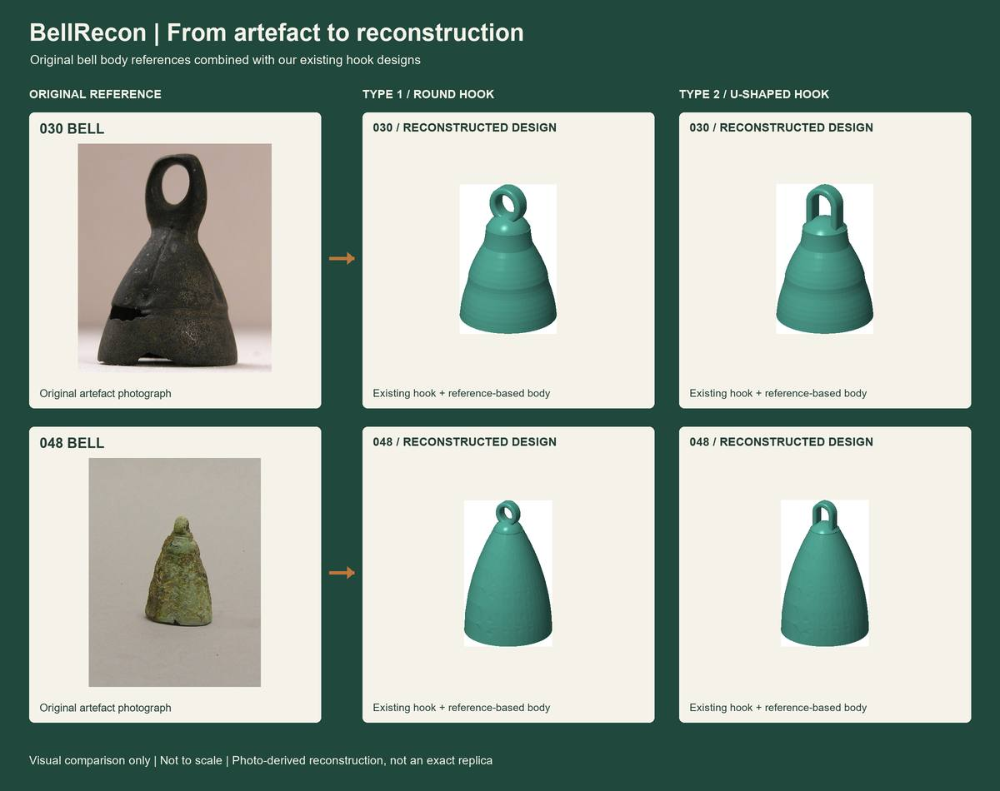

Drag to rotate · Scroll or pinch to zoom · Double-click to reset.
FIELD EVIDENCE / DIGITAL RECONSTRUCTION / COMPARATIVE RESEARCH
A surviving loop.
A wider history
of bells.
Archaeological Bell Reconstruction & Comparative Research
From a corroded copper artefact from Ambal, Tamil Nadu, to measured geometry and a source-linked collection of 73 comparative bells.

AMBAL · TAMIL NADU · INDIA73 COMPARATIVE RECORDSRESEARCH COLLECTION · AUGUST 2026
01 / INTRODUCTION
Reading an object
through its remaining form.
The study begins with a small, corroded suspension component attributed to a medieval bell from Ambal, Nagapattinam, Tamil Nadu, India.
The sample was supplied for archaeometallurgical research by V. Selvakumar, Associate Professor, Department of Archaeology, Tamil University, Thanjavur, Tamil Nadu, India. Its reported findspot and medieval attribution follow information communicated by him to the research team; they are not independent dating results produced by this reconstruction.
The component is described here as a bell suspension loop with surviving base. “Suspension loop” is established museum terminology for a bell’s attachment feature (Met catalogue example). This descriptive term does not establish the original local name or precise typology of the Ambal fragment.
Surface corrosion, material loss and an irregular surviving outline complicate measurement. The team reports taking readings at two or three locations and averaging selected measurements. The reconstruction is therefore a dimension-constrained idealisation, not a recovery of an intact original or a precision scan of the corroded surface.
02 / ARTEFACT DOCUMENTATION
The physical record comes first.
Ruler photographs document orientation and the surviving outline. Caliper photographs record local dimensions. Neither the artefact’s colour nor its corrosion has been altered in these photographs.
Multiple views record the loop and surviving base, retained as supplied.
Local readings must be interpreted with their contact points and orientation.
The collage shows readings of 7.92, 6.45, 6.44, 7.65, 3.14, 8.16, 8.01, 2.64 and 7.68. A complete point-by-point measurement register and uncertainty budget are not supplied. The website therefore does not retrospectively assign every reading to a feature or claim that every final CAD parameter is a measured average.
View all 15 original photographs
03 / DIGITAL RECONSTRUCTION
Measured constraints.
Two digital reconstruction types.
Two hook reconstruction types were created and both are retained here: the existing Inner-edge Join model and the new Original Profile model. Inspect either model without replacing the other.
Drag to rotate · Scroll or pinch to zoom · Double-click to reset.
Shared nominal envelope
- Overall component height
- 8.160
- Base diameter
- 8.01
- Outer loop — width × height
- 6.45 × 6.75
- Opening — width × height
- 4.00 × 4.30
- Loop depth
- 2.90
- Edge fillet radius
- 0.45
How to read the pair
These are two digital reconstruction types of the same archaeological component, presented side by side for comparison. They are design interpretations constrained by the supplied dimensions, not two separate artefacts.
The loop is slightly oval, not a perfect circle. Displayed nominal values are design parameters rather than new artefact measurements.
The source uses CadQuery, a Python-based parametric CAD library built on Open CASCADE. Profiles, extrusion, fillets, Boolean union and a through-cut define the solids. STEP, STL and BREP files, source scripts, engineering views and the supplied validation record are available below.

04 / COMPARATIVE COLLECTION
73 bells. Traceable sources.
The team reports screening more than 200 bell records and retaining 73 with usable photographs and major dimensions. This is a selected comparison collection, not a representative census of ancient bells.
Museum records and archaeological publications provide total height and diameter or width. Photographs were calibrated with image rulers, then manually aligned to visible object and component boundaries. Shadow and background are not intended measurement features.
Near-frontal views are more suitable for image-plane measurement. Oblique or perspective views introduce uncertainty that image rotation alone cannot remove. The source notes and limitations are retained; no blanket accuracy percentage is claimed.
73photographs & data records
73record-linked evidence PDFs
73ruler images & reports
Select a record for all 18 original spreadsheet fields, its ruler report, evidence and individual workbook. Exact source wording is retained. Region/site is shown only where provided; a museum’s location is not the artefact’s origin.
05 / FILTERED DIMENSIONAL VIEWS
A closer view of the smaller forms.
Each plot presents a different reading of the same measurements: period, material, reported region/site and source institution. X is loop outer width/diameter; Y is image-scaled loop height. All plotted lengths are in mm.
★ The Ambal reference is at (6.45, 8.16). Its Y value is the whole surviving component height, including the base, not ring-only height. Comparisons are exploratory because component boundaries are not necessarily homologous across records.
06 / FULL DIMENSIONAL VIEWS
The complete dimensional range.
All 73 dataset points are retained here, including those hidden from the close-up views. Larger values stretch the axes and compress the smaller loops. Neither view replaces source evidence.
07 / DIMENSIONAL NEIGHBOURS
Nearby in size.
Not necessarily in history.
The 15 closest records to (6.45, 8.16) are ranked by unweighted Euclidean distance in the plotted millimetre coordinates. Period, material and region provide context; they are not ranking weights.
distance = √[(loop width − 6.45)² + (loop height − 8.16)²]
The closest is #048 · MET-56441, with loop width 6.90 and height 8.10, approximately 0.454 mm from the reference in this two-dimensional space. This does not identify the Ambal artefact, date it, establish cultural association or determine its missing bell body.
Download nearest-15 CSV ↗Scroll horizontally for all dimensions, notes and links.
07A / REFERENCE-BASED FULL-BELL STUDY
From museum reference
to reconstructed form.
Two documented bell bodies, four interpretive assemblies. Reference bodies #030 and #048 were modelled from museum photographs and dimensional records, then combined with the two existing BellRecon hook designs. These are comparative design studies, not recovered originals of the Ambal bell.

{kind=link}
Evidence, estimates and design choices
The Metropolitan Museum of Art catalogue records provide the dimensional anchors and original photographs. The dataset's serial numbers #030 and #048 are local research identifiers, not museum accession numbers.
| Evidence or parameter | #030 · MET-449196 | #048 · MET-56441 |
|---|---|---|
| Museum record | The Met · accession 37.75.35 ↗ | The Met · accession 2001.433.114 ↗ |
| Published dimensions | Height 1 1/16 in. (2.7 cm); diameter 11/16 in. (1.7 cm) | Height 1 1/2 in. (3.8 cm); width 15/16 in. (2.4 cm) |
| Reference calibration used | Height 26.99; diameter 17.46, converted from the published inch fractions | Height 38.00; width 24.00, following the published metric values |
| Image-scaled body height | Approximately 16.98 | Approximately 29.90 |
| Nominal circular mouth diameter | 17.46 | 24.00 — a modelling choice based on the published width, not a museum-measured diameter |
| Hook interface and cavity | Crown diameter 8.01; specified radial wall 1.50; open underside. These are CAD design parameters, not measurements of the museum bells' interiors. | |
| Nominal assembly height | 25.14 with either existing hook type | 38.06 with either existing hook type |
Source unit conversions and rounded metric equivalents are not identical. The selected calibration convention is stated above for reproducibility; extra decimal places do not imply greater measurement accuracy. The existing hooks have a nominal height of 8.16 including their bases, so the assembled height need not reproduce the museum bell's overall height.
Calibrate the photograph
Known reference height and diameter or width set separate vertical and horizontal image scales. A ruler grid was aligned with the visible outline. Component boundaries supplied the body-height estimates; shadows and missing material were not treated as intact boundaries. This is image-plane scaling, not a 3D scan or a perspective correction.
Trace and regularise
Body spans were sampled at successive heights and treated as diameters under an explicitly circular, rotationally symmetric model. The #030 body uses a piecewise circular-section profile; #048 uses a smooth fitted taper to remove local corrosion-related indentations. Any continuous circumferential band inferred from the frontal image remains interpretive; its hidden side and depth are not established by that photograph.
Retain the hooks
The existing Type 1 and Type 2 hook CAD components were retained. Body crowns were adapted to their 8.01 diameter seats and joined into single solids. This local transition intentionally departs from the traced museum silhouette. A 1.50 radial wall and open-bottom cavity were specified for the reconstruction; original wall thickness was not measured.
Derive the drawings
Front, rear, side, top, bottom, isometric and centre-section views were rendered from the same CAD solids used for the exports. Sheet annotations report nominal design parameters. STEP and BREP retain solid geometry; STL provides a triangulated surface for viewing. Valid single-solid checks establish geometric consistency, not historical accuracy.
Photographic sources: The Metropolitan Museum of Art, Open Access / Public Domain, linked above. CAD views and comparison layout: BellRecon reconstruction study. The bronze viewer finish and teal drawing colour are display conventions, not material or surface analyses.
08 / METHODS & LIMITATIONS
From photograph to comparison.
Document & constrain
Ruler and caliper photographs document the fragment. Selected nominal CAD parameters constrain a smooth reconstruction. Corrosion texture and lost geometry are not reverse-engineered. The approved model and scripts are distributed unchanged.
Calibrate the image
Vertical scale sᵧ = H / full-height pixels. Horizontal scale sₓ = W (or D) / full-width pixels. Boundaries follow the artefact, not its shadow. Separate scales do not reconstruct perspective or hidden depth.
Measure & calculate
h = loop-height pixels × sᵧ; B = body-height pixels × sᵧ. Ratios are h/B and h/D when diameter is published, otherwise h/W. Width is not relabelled as diameter. Existing manually corrected values are preserved, not remeasured by this website.
Plot & compare
JavaScript draws SVG plots from source-aligned data. Independent IQR filtering reproduces the supplied close-up rule. Nearest neighbours use the original graph’s two-decimal coordinates; workbook precision is retained separately.
Interpretive limits. Uneven surfaces, landmark choice, perspective, pixel resolution and occlusion limit dimensional inference. Image-derived values are projected estimates, unsuitable as unqualified manufacturing dimensions. Geometric validity does not validate historical reconstruction.
Reproducibility. Python prepares source-linked data and verifies graph–spreadsheet consistency. Original Excel formulas, images, evidence and CAD remain unchanged. Individual plot exports are reusable. SHA-256 checks establish file integrity, not scientific validation.
Filtering, missing metadata and integrity
X bounds: −1.82 to 55.06; Y bounds: −3.66 to 54.96, from Q1 − 1×IQR and Q3 + 1×IQR with linear-interpolated quartiles. The filtered view additionally uses a 0–50 display window.
Era and material colours are coarse display categories; exact source strings appear in record details. “Not stated in dataset” is a missing-data category. No origin is inferred from museum location. Some evidence PDFs contain the same publication; 73 files do not mean 73 unique publications.
Documents are retained as supplied. Earlier wording or local file paths inside them may differ from the website’s clarified terminology. Images and publications retain their original rights; inclusion does not grant a new licence.
Download data reconciliation report ↗09 / OPEN THE RESEARCH FILES
Evidence you can inspect.
Download source data, photographs, ruler reports, both reconstruction types and interactive graphs. Individual files are also accessible through each gallery record.
Dataset
Original Excel · 73 embedded photos ↗Web data & filter flags · CSV ↗Structured records · JSON ↗Photographs & evidence
Two reconstruction types
Type 01 · Inner-edge joinExisting STL mesh ↗Type 02 · Original profileOriginal Profile STEP ↗Original Profile STL ↗Original Profile BREP ↗Original Profile drawing PDF ↗Interactive graphs
Filtered · dataset only ↗Filtered · with Ambal reference ↗Full · dataset only ↗Full · with reference ↗All four original HTML files · ZIP ↗Each individual plot also exports PNG, JPG, SVG and self-contained HTML. Toggle the larger star before export.
The complete collection is assembled in your browser from original files (about 200 MB before packaging). Keep this page open; large downloads work best on a desktop connection.